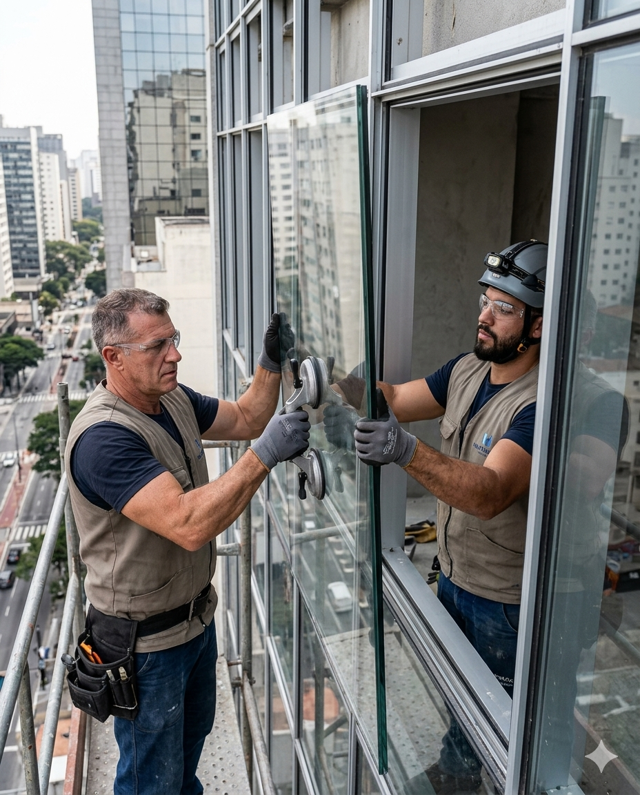

A Max Vidraçaria atua no ramo de vidros temperados há anos, atendendo empresas, comércios e residências com profissionais altamente qualificados, comprometidos e dedicados.
Prezando pela excelência no atendimento, executamos serviços com segurança, qualidade e profissionalismo no prazo estabelecido, mantendo a integridade com o objetivo de alcançar novos resultados.
Conheça nossos serviços +Executar projetos personalizados com qualidade e profissionalismo, atendendo às expectativas dos nossos clientes.
Ser reconhecida como uma empresa de referência em produtos e serviços, mantendo a excelência em tudo que fazemos.
Ética
Compromisso
Profissionalismo
Inovação
Qualidade